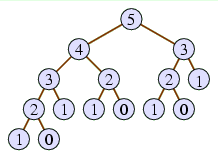
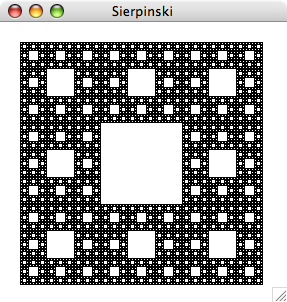
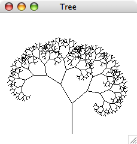

Chapter 18. Recursion examples
When examining recursion in the previous chapter, we looked at
several examples of recursion, but the problems were always just as easy
to solve using loops. The chapter promised that eventually we would see
examples where recursion could do things that can't easily be done
otherwise. We'll see some examples now.
18.1. Fibonacci numbers
But let's start with an example that isn't particularly useful but which
helps to illustrate a good way of illustrating recursion at work.
We will build a recursive method to compute numbers in the Fibonacci
sequence. This infinite sequence starts with 0 and 1, which we'll think
of as the zeroth and first Fibonacci numbers, and each succeeding
number is the sum of the two preceding Fibonacci numbers. Thus,
the second number is 0 + 1 = 1.
And to get the third Fibonacci number, we'd sum the first (1) and the
second (1) to get 2. And the fourth is the sum of the second (1) and the
third (2), which is 3. And so on.
n: |
0 |
1 |
2 |
3 |
4 |
5 |
6 |
7 |
8 |
9 |
10 |
11 |
… |
nth Fibonacci: |
0 |
1 |
1 |
2 |
3 |
5 |
8 |
13 |
21 |
34 |
55 |
89 |
… |
We want to write a method fib that takes some integer
n as a parameter and returns the nth Fibonacci
number, where we think of the first 1 as the first Fibonacci number.
Thus, an invocation of fib(6) should return 8,
and in invocation of fib(7) should return 13.
public int fib(int n) {
if(n <= 1) {
return n;
} else {
return fib(n - 1) + fib(n - 2);
}
}
In talking about recursive procedures such as this, it's useful
to be able to diagram the various method calls performed. We'll
do this using a recursion tree.
The recursion tree for
computing fib(5) is in Figure 18.1.
Figure 18.1: Recursion tree for computing fib(5).

The recursion tree has the original parameter (5 in this case) at the
top, representing the original method invocation. In the case of
fib(5), there would be two recursive calls,
to fib(4) and
fib(3), so we include 4 and 3 in our diagram
below 5 and draw a line connecting them.
Of course, fib(4) has two recursive calls
itself, diagrammed in the recursion tree, as does
fib(3). The complete diagram in Figure 18.1
depicts all the
recursive invocation of fib made in the course of
computing fib(5). The bottom of the recursion
tree depicts those cases when there are no recursive calls —
in this case, when n <= 1.
Though Fibonacci computation is a classical example of recursion,
it has a major
shortcoming: It's not a compelling example. There are two reasons for this. First, how often do
you expect to want to compute Fibonacci numbers?
(The Fibonacci sequence admittedly appears in surprising circumstances,
like the numbers of spirals on pine cones and sunflowers,
but even those cases rarely require computing large Fibonacci numbers.)
And second, the above recursive method isn't a good
technique for doing it anyway. In fact, if you measure the speed
by the number of additions performed, the recursive technique above
will take fib(n) − 1
additions; to see this, you can take the above
recursion tree and notice that the overall return value is computed
as
(((1 + 1) + 1) + (1 + 1)) + ((1 + 1) + 1) .
Essentially, we are summing fib(n) 1's, which will require
fib(n) − 1
additions. A much faster way is to start with the first two
Fibonaccis and to
extend the sequence one by one, each time adding the previous
two numbers, until we reach the nth Fibonacci. Computing each
Fibonacci requires just one addition, so the total number of additions
is n − 1, which is much less than
fib(n) − 1
for large n.
18.2. Anagrams
Our first example is the problem of listing all the rearrangements of
a word entered by the user. For example, if the user types
east, the program should list all 24 permutations, including
eats,
etas,
teas, and non-words like
tsae. If we want the program to work with any length of word,
there is no straightforward way of performing this task without
recursion.
With recursion, though, we can do it by thinking through the magical
assumption. If we had a four-letter word, our magical assumption allows
us to presume our recursive method knows how to handle all words with
fewer than four letters. So what we might hope to do is to take each
letter of the four-letter word, and place that letter at the front of
all the three-letter permutations of the remaining letters. Given
east, we would place e in front of all six
permutations of ast —
ast,
ats,
sat,
sta,
tas, and
tsa — to arrive at
east,
eats,
esat,
esta,
etas, and
etsa. Then we would place a in front of all six
permutations of est, then s in front of all six
permutations of eat, and finally t in front of all six
permutations of eas. Thus, there will be four recursive calls
to display all permutations of a four-letter word.
Of course, when we're going through the anagrams of ast,
we would follow the same procedure.
We first display an a in front of each anagram of st,
then an s in front of each anagram of at,
and finally a t in front of each anagram of as.
As we display each of these anagrams of ast, we want to display
the letter e before it.
To translate this concept into Java code, our recursive method will need
two parameters. The more obvious parameter will be the word whose
anagrams to display, but we also need the letters that we want to
print before each of those anagrams. At the top level of the recursion,
we may want to print all anagrams of east, without printing any
letters before each anagram. But in the next level, one recursive call
will be to to display
all anagrams of ast, prefixing each with the letter
e. And in the next level below that, one recursive call will be
to display all anagrams of st, prefixing each with the letters
ea.
The base case of our recursion would be when we reach a word with
just one letter. Then, we just display the prefix followed by the one
letter in question.
This is the thought process that leads to the working implementation
found in Figure 18.2.
Figure 18.2: The Anagrams program.
1 import acm.program.*;
2
3 public class Anagrams extends Program {
4 public void run() {
5 String word = readLine("Give a word to anagram: ");
6 printAnagrams("", word);
7 }
8
9 public void printAnagrams(String prefix, String word) {
10 if(word.length() <= 1) {
11 println(prefix + word);
12 } else {
13 for(int i = 0; i < word.length(); i++) {
14 String cur = word.substring(i, i + 1);
15 String before = word.substring(0, i); // letters before cur
16 String after = word.substring(i + 1); // letters after cur
17 printAnagrams(prefix + cur, before + after);
18 }
19 }
20 }
21 }
18.3. Sierpinski Carpet
Recursion can help in displaying complex patterns where the pattern
appears inside itself as a smaller version. Such patterns, called
fractals are in fact a visual manifestation of the concept of
recursion. One well-known pattern is the Sierpinski gasket,
displayed in Figure 18.3.
Figure 18.3: Running Sierpinski.

Notice how the Sierpinski gasket is composed of eight smaller
Sierpinski gaskets arranged around the central white square.
This is what will lead to our recursion.
Our recursive method will take
three parameters indicating the position of the gasket to be drawn; the
first two parameters will indicate the x- and
y-coordinates of the gasket's upper left corner, and the
third will indicate how wide and tall the gasket should be.
The method will immediately draw a white box centered within the gasket,
whose side length is 1/3 of the overall gasket's side length.
And then it will draw the eight smaller gaskets surrounding that box,
each of whose side lengths is also 1/3 of the overall gasket's side
length.
The base case will be when the side length goes below 3 pixels.
In this case, doing a recursive call is pointless, since the white
square to be drawn is such a situation is smaller than one pixel.
The full working program appears in
Figure 18.4.
Figure 18.4: The Sierpinski program.
1 import java.awt.*;
2 import acm.program.*;
3 import acm.graphics.*;
4
5 public class Sierpinski extends GraphicsProgram {
6 public void run() {
7 // draw black background square
8 GRect box = new GRect(20, 20, 242, 242);
9 box.setFilled(true);
10 add(box);
11
12 // recursively draw all the white squares on top
13 drawGasket(20, 20, 243);
14 }
15
16 public void drawGasket(int x, int y, int side) {
17 // draw single white square in middle
18 int sub = side / 3; // length of sub-squares
19 GRect box = new GRect(x + sub, y + sub, sub - 1, sub - 1);
20 box.setFilled(true);
21 box.setColor(Color.WHITE);
22 add(box);
23
24 if(sub >= 3) {
25 // now draw eight sub-gaskets around the white square
26 drawGasket(x, y, sub);
27 drawGasket(x + sub, y, sub);
28 drawGasket(x + 2 * sub, y, sub);
29 drawGasket(x, y + sub, sub);
30 drawGasket(x + 2 * sub, y + sub, sub);
31 drawGasket(x, y + 2 * sub, sub);
32 drawGasket(x + sub, y + 2 * sub, sub);
33 drawGasket(x + 2 * sub, y + 2 * sub, sub);
34 }
35 }
36 }
18.4. Tree
One very nice fractal worth looking at is the tree-like one
appearing in Figure 18.5. Unfortunately, our presentation
will only make sense if you're familiar with the sines and cosines of
trigonometry; but if you understand them, this is worth your while.
Figure 18.5: Running Tree.

Looking at Figure 18.5, you'll notice that the tree
consists of a trunk and two branches. Each branch is appears exactly the
same as the overall tree, but smaller and rotated a bit.
In our implementation of Figure 18.6, our recursive
method will take four parameters to indicate the trunk of the tree to be
drawn. (Below the top level of the recursion, the trunk will in fact be
the base of the branch being drawn.)
These four parameters indicate the x- and
y-coordinates of the trunk's base, the length of the trunk,
and the angle of the trunk.
The recursive method's base case will be when the length is at most
2 pixels. In this case, there is not an interesting tree to be
drawn, so the method returns immediately. But if the length is more than
2 pixels, the method will compute the coordinates of the trunk's
other end of the trunk by applying basic trigonometry.
To compute the cosine and sine of the trunk's angle, the method use the
static methods cosDegrees and sinDegrees found in the
acm.graphics package's GMath class.
After computing the coordinates of the trunk's other end, the method
adds a line corresponding to the trunk.
And then it makes two recursive calls to draw each branch.
Both branches are slightly smaller than the overall tree (75% in the
case of the left branch and 66% in the case of the right), and at
rotated at an angle from the trunk (30° counterclockwise for the
left branch, 50° clockwise for the right).
Figure 18.6: The Tree program.
1 import java.awt.*;
2 import acm.program.*;
3 import acm.graphics.*;
4
5 public class Tree extends GraphicsProgram {
6 public void run() {
7 drawTree(120, 200, 50, 90);
8 }
9
10 public void drawTree(double x0, double y0, double len, double angle) {
11 if(len > 2) {
12 double x1 = x0 + len * GMath.cosDegrees(angle);
13 double y1 = y0 - len * GMath.sinDegrees(angle);
14
15 add(new GLine(x0, y0, x1, y1));
16 drawTree(x1, y1, len * 0.75, angle + 30);
17 drawTree(x1, y1, len * 0.66, angle - 50);
18 }
19 }
20 }
Playing with the proportions and rotation factors in the recursive
calls leads to other interesting tree variants.